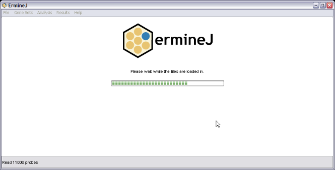

This page introduces what you will see when you first run ermineJ. Details on how to run an analysis, view the details of a gene set and other tasks are detailed elsewhere.
Before you begin you will need to get some files the software uses. First, you need a file that describes what gene sets are available. ErmineJ is set up to use the Gene Ontology; the necessary file is provided with the software but you may want to keep it up to date. The other file is one that describes the microarray design you are using: which of the Gene Ontology terms are actually represented on the microarray.
For more information on these input files, see the "Gene Ontology XML" topic and the "Gene Annotation" topic.
After you have obtained the files (unzipping them is not necessary), you can return to this page.
When you first start up the software, you will be presented with the following dialog box (Note that most of the screen shots in this manual have been scaled down to save space).

Enter the GO XML file you are using, and the microarray annotation file, using the "Browse" buttons to locate them on your computer. Select the format of the annotation file from the pull-down menu. If you got the file from our web site, the format is "ErmineJ". The click on "Start".
Then you will have a brief wait while the data files are loaded. These data are used for the remaining analysis and will only have to be loaded once. Here is what the loading screen looks like:
Once loading is finished (~15-30 seconds) the following "table view" is shown.

The three key parts of this window are:
The menus are:
There are shortcut keys for many of the menu items.
There are some additional features of the interface described below.
The table view always shows the four columns (and others, once you have done some analysis); clicking on a column header will re-sort the table according to the selected column.
Note that GO terms with no members in your array design, or more than 2000 members, are not displayed on the table.
The table's columns are:
After an analysis has been done, additional columns will be added to this table. These are explained elsewhere.
The "tree" tab switches you to a view of the gene sets in a hierarchy. This view is linked to the table view in many ways. You can use either or both views, depending on what you are doing and which you prefer.

In the the tree panel, the entire Gene Ontology is displayed, along with gene sets you have defined (under "user-defined").
Note: GO terms not listed on the table view are shown in grey italic text.
In addition to the obvious features shown above, there are other functionalities of the main panel:
There are "tooltips" that are used to display extra information that would otherwise clutter up the interface. Hover the mouse over a field in the table or a line in the tree to see this. Specifically: